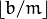
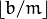
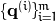

Matching with binary descriptors
Once descriptors have been extracted from an image (both they represent lines and points), it becomes interesting to be able to match a descriptor with another one extracted from a different image and representing the same line or point, seen from a differente perspective or on a different scale.
In reaching such goal, the main headache is designing an efficient search algorithm to associate a query descriptor to one extracted from a dataset.
In the following, a matching modality based on Multi-Index Hashing (MiHashing) will be described.
Multi-Index Hashing
The theory described in this section is based on [MIH].
Given a dataset populated with binary codes, each code is indexed m times into m different hash tables, according to m substrings it has been divided into. Thus, given a query code, all the entries close to it at least in one substring are returned by search as neighbor candidates. Returned entries are then checked for validity by verifying that their full codes are not distant (in Hamming space) more than r bits from query code.
In details, each binary code h composed of b bits is divided into m disjoint substrings  , each with length  or bits. Formally, when two codes h and g differ by at the most r bits, in at the least one of their m substrings they differ by at the most bits. In particular, when (where is the Hamming norm), there must exist a substring k (with ) such that
, each with length  or bits. Formally, when two codes h and g differ by at the most r bits, in at the least one of their m substrings they differ by at the most bits. In particular, when (where is the Hamming norm), there must exist a substring k (with ) such that
That means that if Hamming distance between each of the m substring is strictly greater than , then must be larger that r and that is a contradiction.
If the codes in dataset are divided into m substrings, then m tables will be built. Given a query q with substrings , i-th hash table is searched for entries distant at the most from and a set of candidates is obtained.
The union of sets is a superset of the r-neighbors of q. Then, last step of algorithm is computing the Hamming distance between q and each element in , deleting the codes that are distant more that r from q.
BinaryDescriptorMatcher Class
BinaryDescriptorMatcher Class furnishes all functionalities for querying a dataset provided by user or internal to class (that user must, anyway, populate) on the model of Feature2d’s DescriptorMatcher.
BinaryDescriptorMatcher::BinaryDescriptorMatcher
Constructor.
-
C++: BinaryDescriptorMatcher::BinaryDescriptorMatcher()
The BinaryDescriptorMatcher constructed is able to store and manage 256-bits long entries.
BinaryDescriptorMatcher::createBinaryDescriptorMatcher
Create a BinaryDescriptorMatcher object and return a smart pointer to it.
-
C++: Ptr<BinaryDescriptorMatcher> BinaryDescriptorMatcher::createBinaryDescriptorMatcher()
BinaryDescriptorMatcher::add
Store locally new descriptors to be inserted in dataset, without updating dataset.
-
C++: void BinaryDescriptorMatcher::add(const std::vector<Mat>& descriptors)
| Parameters: |
- descriptors – matrices containing descriptors to be inserted into dataset
|
|---|
Note
Each matrix i in descriptors should contain descriptors relative to lines extracted from i-th image.
BinaryDescriptorMatcher::train
Update dataset by inserting into it all descriptors that were stored locally by add function.
-
C++: void BinaryDescriptorMatcher::train()
Note
Every time this function is invoked, current dataset is deleted and locally stored descriptors are inserted into dataset. The locally stored copy of just inserted descriptors is then removed.
BinaryDescriptorMatcher::clear
Clear dataset and internal data
-
C++: void BinaryDescriptorMatcher::clear()
BinaryDescriptorMatcher::match
For every input query descriptor, retrieve the best matching one from a dataset provided from user or from the one internal to class
-
C++: void BinaryDescriptorMatcher::match(const Mat& queryDescriptors, const Mat& trainDescriptors, std::vector<DMatch>& matches, const Mat& mask=Mat() ) const
-
C++: void BinaryDescriptorMatcher::match(const Mat& queryDescriptors, std::vector<DMatch>& matches, const std::vector<Mat>& masks=std::vector<Mat>() )
| Parameters: |
- queryDescriptors – query descriptors
- trainDescriptors – dataset of descriptors furnished by user
- matches – vector to host retrieved matches
- mask – mask to select which input descriptors must be matched to one in dataset
- masks – vector of masks to select which input descriptors must be matched to one in dataset (the i-th mask in vector indicates whether each input query can be matched with descriptors in dataset relative to i-th image)
|
|---|
BinaryDescriptorMatcher::knnMatch
For every input query descriptor, retrieve the best k matching ones from a dataset provided from user or from the one internal to class
-
C++: void BinaryDescriptorMatcher::knnMatch(const Mat& queryDescriptors, const Mat& trainDescriptors, std::vector<std::vector<DMatch>>& matches, int k, const Mat& mask=Mat(), bool compactResult=false ) const
-
C++: void BinaryDescriptorMatcher::knnMatch(const Mat& queryDescriptors, std::vector<std::vector<DMatch>>& matches, int k, const std::vector<Mat>& masks=std::vector<Mat>(), bool compactResult=false )
| Parameters: |
- queryDescriptors – query descriptors
- trainDescriptors – dataset of descriptors furnished by user
- matches – vector to host retrieved matches
- k – number of the closest descriptors to be returned for every input query
- mask – mask to select which input descriptors must be matched to ones in dataset
- masks – vector of masks to select which input descriptors must be matched to ones in dataset (the i-th mask in vector indicates whether each input query can be matched with descriptors in dataset relative to i-th image)
- compactResult – flag to obtain a compact result (if true, a vector that doesn’t contain any matches for a given query is not inserted in final result)
|
|---|
BinaryDescriptorMatcher::radiusMatch
For every input query descriptor, retrieve, from a dataset provided from user or from the one internal to class, all the descriptors that are not further than maxDist from input query
-
C++: void BinaryDescriptorMatcher::radiusMatch(const Mat& queryDescriptors, const Mat& trainDescriptors, std::vector<std::vector<DMatch>>& matches, float maxDistance, const Mat& mask=Mat(), bool compactResult=false ) const
-
C++: void BinaryDescriptorMatcher::radiusMatch(const Mat& queryDescriptors, std::vector<std::vector<DMatch>>& matches, float maxDistance, const std::vector<Mat>& masks=std::vector<Mat>(), bool compactResult=false )
| Parameters: |
- queryDescriptors – query descriptors
- trainDescriptors – dataset of descriptors furnished by user
- matches – vector to host retrieved matches
- maxDist – search radius
- mask – mask to select which input descriptors must be matched to ones in dataset
- masks – vector of masks to select which input descriptors must be matched to ones in dataset (the i-th mask in vector indicates whether each input query can be matched with descriptors in dataset relative to i-th image)
- compactResult – flag to obtain a compact result (if true, a vector that doesn’t contain any matches for a given query is not inserted in final result)
|
|---|
References
| [MIH] | Norouzi, Mohammad, Ali Punjani, and David J. Fleet. Fast search in hamming space with multi-index hashing, Computer Vision and Pattern Recognition (CVPR), 2012 IEEE Conference on. IEEE, 2012. |